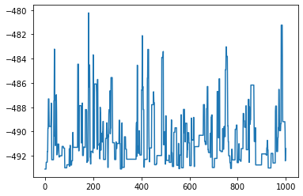
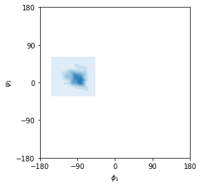

[1]:
%load_ext autoreload
%autoreload 2
[2]:
import molsysmt as msm
import openexplorer as oe
import numpy as np
from simtk import unit
from simtk.openmm import app
import matplotlib.pyplot as plt
MonteCarlo¶
[3]:
modeller = msm.convert('alanine_dipeptide.pdb', to_form='openmm.Modeller')
topology = modeller.topology
positions = modeller.positions
forcefield = app.ForceField('amber10.xml', 'amber10_obc.xml')
system = forcefield.createSystem(topology, constraints=app.HBonds, nonbondedMethod=app.NoCutoff)
explorer = oe.Explorer(topology, system, platform='CUDA')
[4]:
explorer.set_coordinates(positions)
[5]:
explorer.quench()
[6]:
movement = oe.movements.RandomDihedralMaxShifts(stepsize=45*unit.degrees)
[7]:
reporter = oe.reporters.OpenExplorerReporter(1, step=True, coordinates=True, boxVectors=False,
potentialEnergy=True)
[8]:
exploration = oe.exploration_campaign.MonteCarlo(explorer, movement, temperature=300.0*unit.kelvin,
reporter=reporter)
[9]:
exploration.run(1000)
[10]:
exploration.n_tries
[10]:
1000
[11]:
exploration.n_acceptances
[11]:
256
[12]:
plt.plot(exploration.reporter.step, exploration.reporter.potential_energy._value)
plt.show()

[13]:
view = msm.view(exploration.reporter)
view.clear()
view.add_licorice()
view
[14]:
phi_chains, psi_chains, phi_angles, psi_angles = msm.ramachandran_angles(exploration.reporter)
[15]:
import seaborn as sns
ax = sns.kdeplot(phi_angles[:,0], psi_angles[:,0], shade=True)
ax.set_xlim(-180.0,180.0)
ax.set_ylim(-180.0,180.0)
ax.set_xticks([-180.0, -90.0, 0.0, 90.0, 180.0])
ax.set_yticks([-180.0, -90.0, 0.0, 90.0, 180.0])
ax.set_xlabel('$\phi_1$')
ax.set_ylabel('$\psi_1$')
ax.set_aspect('equal')

[16]:
msm.covalent_dihedral_quartets(exploration.reporter, dihedral_angle='phi')
[16]:
array([[ 4, 6, 8, 14]])
[17]:
msm.get_form(exploration.reporter.topology)
[17]:
'molsysmt.Topology'
[18]:
exploration.reset(temperature=900.0*unit.kelvin)
[19]:
exploration.run(1000)
[20]:
exploration.n_tries
[20]:
1000
[21]:
exploration.n_acceptances
[21]:
437
[ ]: